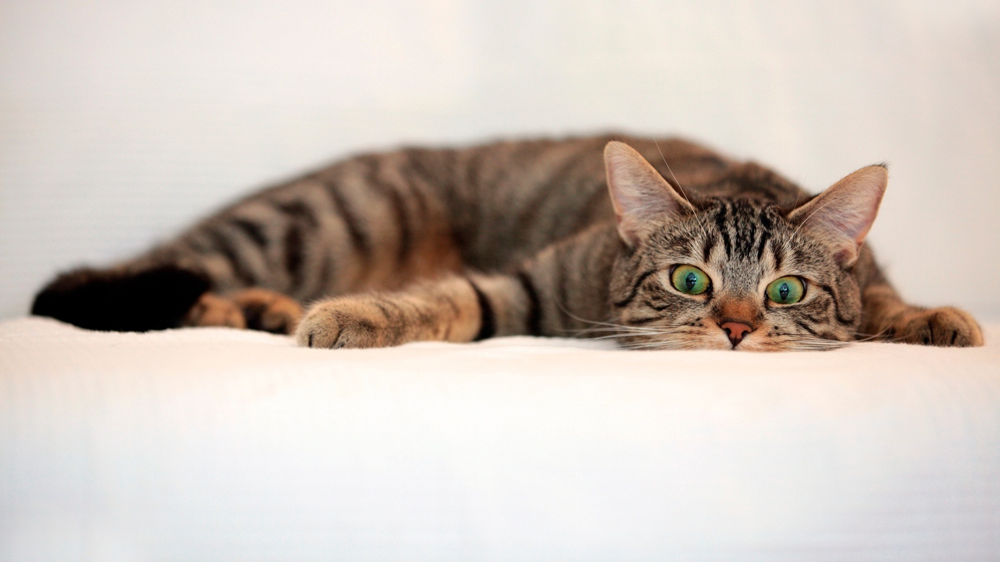

МурмаркетМарусяВозраст: 1 годПорода: азиатская голубоглазаяБолезни: нетСтатус: ищет хозяинаДобрая, ласковая кошечка с
голубыми как воды Байкала глазами.Возраст: 1 годЛюбит смотреть в окно и наблюдать за снежинками.
Ищет добрую хозяйку с такиими же голубыми глазами.МишкаВозраст: 9 месяцевПорода: нетБолезни: нетСтатус: ищет хозяинаЛюбопытный кот, который
вечно старается утащить еду со стола.Возраст: 9 месяцевМечтает обрести семью
без вредных привычек и любящих вкусно покушать.ЛизаВозраст: 2 годаПорода: нетБолезни: нетСтатус: нашла хозяинаОчень интелегентная кошка со средоточенным взгялдом.Возраст: 2 годаГотова сидеть на мягкой
перине часами и наблюдать за ходом часов в гостиной.ПуглиВозраст: 1,5 годаПорода: британская лохматаяБолезни: даСтатус: нашла хозяинаОчень игривый кот с большими красивыми глазами.Возраст: 1,5 годаЛюбит активные игры на
свежем воздухе с детьми. Ищет семью спортсменов.

КондиВозраст: 3 месяцаПорода: нетБолезни: даСтатус: ищет хозяинаЭтот малыш с красивыми
ушками как у рысы любит играть с мячиком.Возраст: 3 месяцаИщет семью без вредных
привычек и большой душой для активных игр.КолобокВозраст: 3 годаПорода: британская полосатаяБолезни: нетСтатус: ищет хозяинаОчень артистичный кот, который любит распевать песни.Возраст: 3 годаОбажает подпевать артистам из
"Голубого огонька", а также людям, поющим в душе.ПушистикВозраст: 1,5 годПорода: уличная боеваяБолезни: даСтатус: ищет хозяинаОбладатель самой красивой и шелковистой шерстки.Возраст: 1,5 годаИщет молодую пару груммеров,
желательно без других домашних животных.ПантераВозраст: 5 месяцевПорода: азиатская шоколаднаяБолезни: нетСтатус: нашла хозяинаКрошка с редким глянцевым
шоколадным окрасом.Возраст: 5 месяцевЭтот малыш обажает играть с маленькими детьми
и спать под батареей. Ищет любящих родителей.СопяткаВозраст: 3 годаПорода: нетБолезни: даСтатус: ищет хозяинаКот, который всегда всех во всем подозревает.Возраст: 3 годаЭтот кот станет незаменимым
членом семьи и другом для семьи, где есть параноики.СоняВозраст: 9 месяцевПорода: уличная боеваяБолезни: даСтатус: ищет хозяинаКошечка с лунными глазками и мягким характером.Возраст: 9 месяцевЭта пушистая домоседка ищет
крепкую семью без маленьких детей.